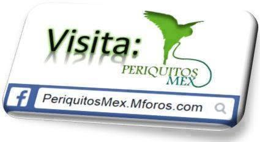
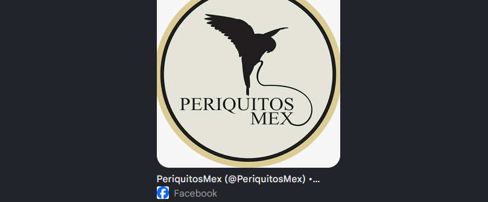
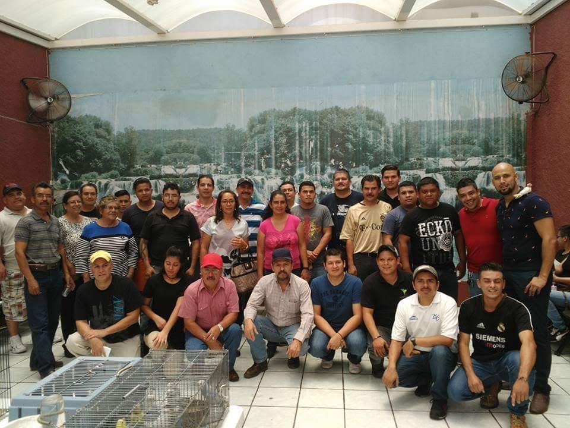
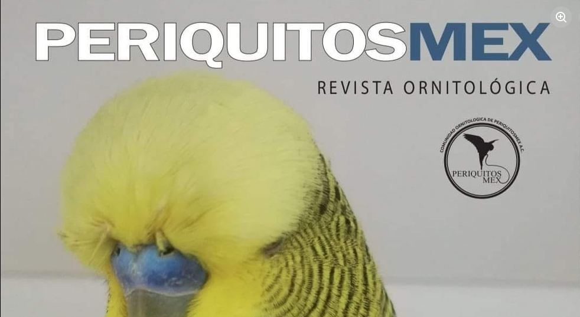
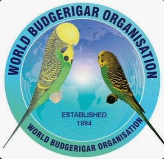
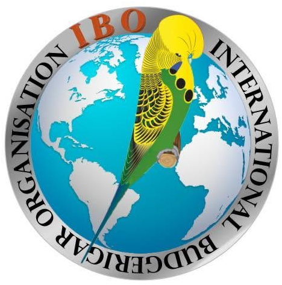
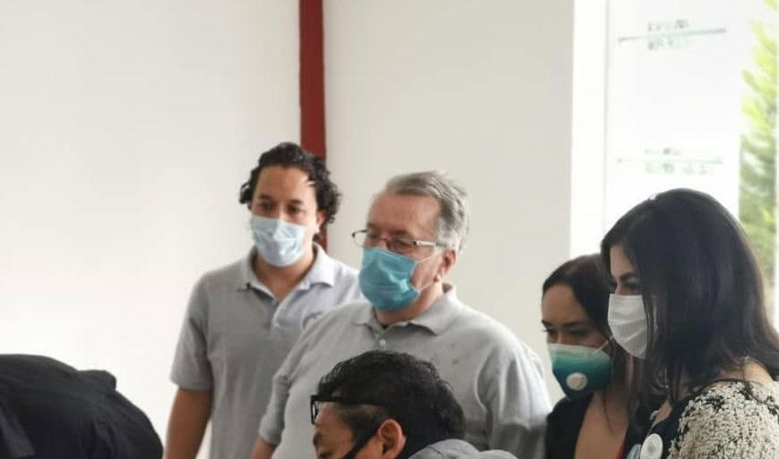

Nuestra Historia
Desde un foro en internet hasta convertirnos en referente de la ornitología en México. Haz clic en cada hito para conocer los detalles de nuestra evolución.

Nace el foro PeriquitosMex
Un grupo de amigos mexicanos decide crear su propio foro sobre periquitos australianos, inspirado por foros internacionales. Gracias a Rene Borjon, el foro estable se abre el 3 de noviembre de 2009 en periquitosmex.mforos.com.

Salto a Facebook
Tras el mantenimiento de miarroba, Ezequiel Gonzales crea el grupo de Facebook el 21 de enero de 2012 como extensión temporal que terminó convirtiéndose en el corazón de la comunidad.

Primeros concursos y exposiciones
Comienzan las primeras reuniones, exposiciones y concursos que consolidan a PeriquitosMex como una comunidad activa y organizada en el territorio mexicano.

Lanzamiento de la Revista Ornitológica
Nace la Revista Ornitológica PeriquitosMex, liderada por Pedro Rivera y Delfino Rosales, para compartir conocimiento técnico con criadores de toda Hispanoamérica.

Constitución como A.C.
PeriquitosMex se constituye legalmente como Asociación Civil, dando un paso formal hacia la profesionalización de la cría y el bienestar aviar en México.


Incorporación internacional
PeriquitosMex logra la incorporación a la World Budgerigar Organization (WBO) y la International Budgerigar Organization (IBO), reconocimiento que vincula a los criadores mexicanos con los estándares mundiales.

Colegio de Jueces PeriquitosMex
Se crea el Colegio de Jueces para formar y certificar evaluadores especializados, asegurando la calidad e integridad de los concursos ornitológicos en México.
Eventos PMX
En PeriquitosMex, fomentamos la difusión de conocimientos y experiencias. Reconocemos que uno de los aspectos más gratificantes de la cría de aves de ornato son las conexiones humanas y las amistades que se forman en el proceso.
Por ello, en PeriquitosMex, planeamos y coordinamos eventos que brinda una plataforma para que los criadores y entusiastas puedan intercambiar experiencias, entablar conversaciones y disfrutar de momentos memorables en un ambiente comunitario.
Revista Ornitologica PeriquitosMex
La Revista Ornitológica PeriquitosMex es una publicación periódica que se dedica a la difusión de conocimientos y experiencias en el ámbito de la cría de aves de ornato, especialmente periquitos australianos. Esta revista es un recurso valioso para los criadores y entusiastas, ya que ofrece artículos informativos, entrevistas con expertos, consejos prácticos y noticias sobre eventos relacionados con la ornitología.
Colegio de Jueces Periquitosmex
El Colegio de Jueces PeriquitosMex es una iniciativa fundamental para la profesionalización de la ornitología en nuestra comunidad. Su objetivo principal es formar y certificar jueces especializados en la evaluación de periquitos australianos para competencias y exposiciones. A través de programas de capacitación rigurosos, los aspirantes a jueces adquieren un conocimiento profundo de los estándares de la raza, la genética y las características fenotípicas, asegurando una valoración justa y consistente de los ejemplares. De esta manera, el Colegio contribuye directamente a la calidad y la integridad de los concursos ornitológicos organizados por PeriquitosMex y otras grupos o clubes afines.